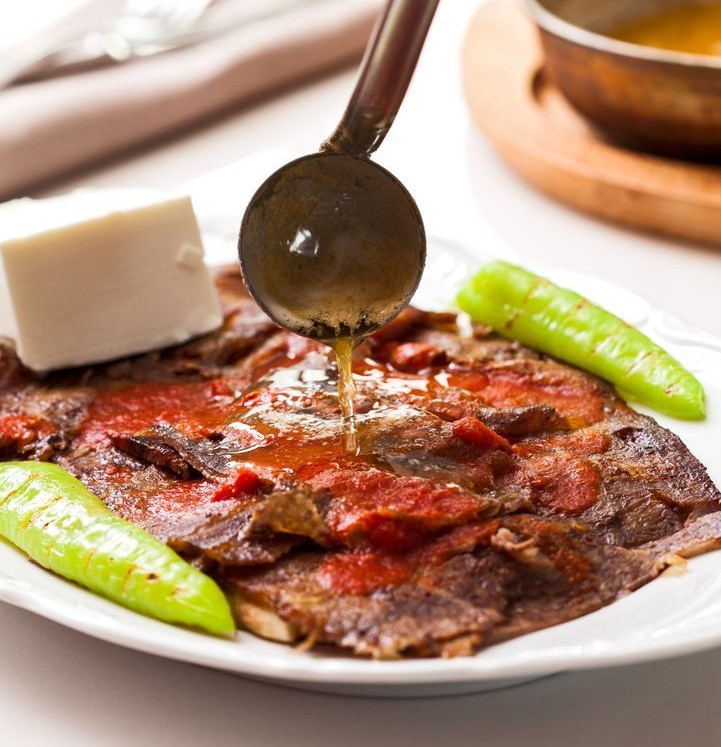

Yöresel Lezzetler
Sulu Yayım (ev makarnası):Yağ, kavrulmuş kıyma ve salça suyla kaynatılır. Kaynayan suya bir miktar yayım konularak pişirilir.
Etli Yaprak Dolması: Yağlı kıyma, pirinç, bulgur ince kıyılmış soğan biraz tuz, karabiber ve salça ile hazırlanan iç, haşlanmış yapraklara özenle sarılır. Özellikle düğünlerde, eş dost bir araya gelerek tencerelerle sarılan dolma, yufka ekmeğine sarılarak servis yapılır. Bölgede üzüm bağlarından toplanan yapraklar bu dolmaya ayrı bir lezzet katar.
Tereyağlı Uzun Pakla (Fasulye):Taze fasulye uçları temizlenip kırılmadan yıkanıp tepsi gibi yayvan bir tencereye dizilir. İsteğe göre üzerine soğan ve domates dilimleri ile süslenir. Karıştırmadan ve kapağı açılmadan kısık ateşte pişirilir. Pişirilen fasulyenin üzerine eritilmiş kızgın tereyağı dökülür. Sıcak servis yapılır.
Keşkek :Safranbolu’nun köylerinden Yazıköy’e has bir yemektir. Bayramlarda derin bir tencereye 3- 4 kg erkeç eti ,aşurelik buğday , biraz salça , tuz ve karabiber konularak tencere ağzına kadar su ile doldurulur.Önceden ısıtılmış özel keşkek fırınlarına ağzı açık olarak akşamdan konulur sabah fırından alınan keşkek eş dost ve akrabaların davet edildiği bayram sofrasında sütle ıslatılıp tekrar pişirilen bişi adı verilen yufka ile ikram edilir.
Ekşili köfte: Kıymaya bir miktar tuz ve karabiber konularak hazırlanan fındık büyüklüğündeki köfteler yağda kızartılır, miyaneli kaynamış suda pişirilir. Ekşilik vermesi için koruk konulur.
Su Böreği: Kıymalı, peynirli ve mantarlı olarak yapılan su böreği bayramlarda, düğünlerde ve davet ve iftar yemeklerinde mutlaka yapılır ve konuklara ikram edilir.
Höşmerim : Un ve yumurta ovularak küçük tanecikler haline getirilir.Orta ateşte yağla kavrulur.Biraz kavrulduktan sonra ceviz de konularak iyice kavrulur. Başka bir kaba alınır ve ılıkken üzerine şerbet dökülür, soğuyunca servis yapılır.
Lokma Tatlısı :Un, su, tuz ve mayadan oluşan yumuşak bir hamur yapılır.Hamurun mayası gelince kızdırılmış yağda kaşığın ucuyla hamur parçaları kızartılır. Önceden hazırlanmış şerbetin içine atılır. Ilık servis yapılır.
Türk mutfağı, Türkiye'nin ulusal mutfağıdır. Orta Asya, Selçuklu ve Beylikler ile Osmanlı kültürünün mirasçısı olan Cumhuriyet Dönemi Türk Mutfağı hem Balkan ve Orta Doğu mutfaklarını etkilemiş hem de bu mutfaklardan etkilenmiştir. Ayrıca Türk mutfağı yörelere göre de farklılıklar gösterir. Karadeniz mutfağı, Güneydoğu mutfağı, Orta Anadolu mutfağı gibi birçok yöreler kendilerine ait zengin bir yemek haznesine sahiptirler. Yöreden yöreye farklılaşan lezzetleri barındıran yeme-içme biçimleri, özel gün, kutlama ve törenlerde ayrı bir anlam hatta kutsallık taşır. Türk Mutfağı, çeşit zenginliği ve damak tadına uygunluk yönünden olduğu kadar birçok yemek ve yiyecek türü ile sağlıklı ve dengeli beslenmeye ve vejetaryen mutfağına kaynaklık edebilecek örnekleri barındırmaktadır